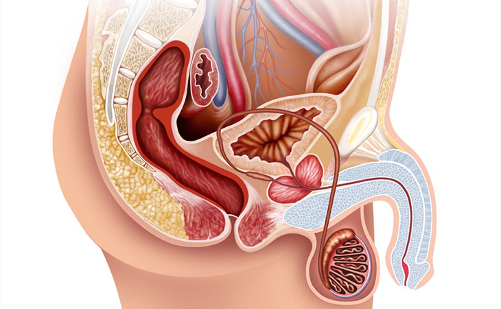

APPARATO RIPRODUTTIVO MASCHILE
L'apparato genitale maschile è l'insieme di organi e di strutture che permettono la riproduzione sessuale negli organismi animali di sesso maschile. Lo studio delle rispettive patologie associate rientra nel campo dell'andrologia.
L'apparato genitale maschile si sviluppa parzialmente verso l'esterno con il pene e lo scroto, contenente i testicoli e gli epididimi. Non sono invece visibili gli altri organi, ovvero le vie spermatiche, le vescicole seminali, le ghiandole bulbouretrali e la prostata.
